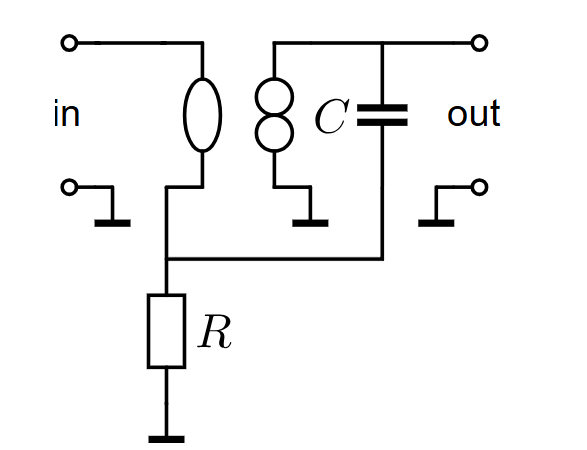

From the previous assignment we know that A1 is a voltage to voltage amplifier with transfer function
$\frac{6.24 \cdot 10^{4}}{s}$Differential or single ended, impedance choice, active or passive feedback

Just a wire, see answers
Single ended to differential voltage,
Go to source_modeling_index
SLiCAP: Symbolic Linear Circuit Analysis Program, Version 3.0.1 © 2009-2024 SLiCAP development team
For documentation, examples, support, updates and courses please visit: analog-electronics.tudelft.nl
Last project update: 2025-01-29 17:24:02